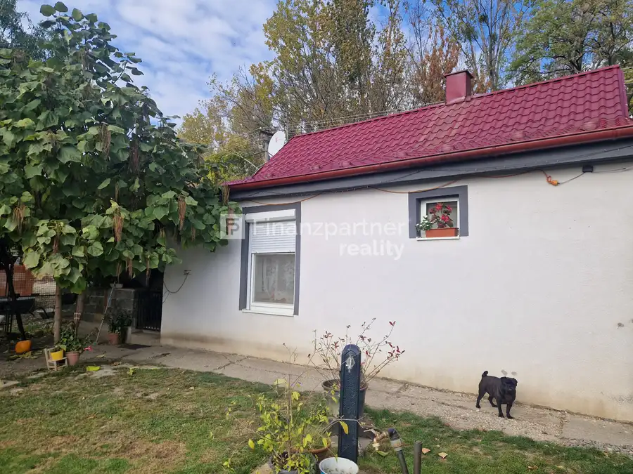

Aktuálna ponuka
6 nehnuteľností, predovšetkým pozemky, rodinné domy, byty. Každá má vlastnú stránku s fotkami, popisom a mapou.
Prezrieť ponukuRenáta MarkuszekováRealitná maklérka
Realitná maklérka · Finanzpartner reality
Predaj a prenájom nehnuteľností · Tomášikovo, Dolný Štál, Blatná na Ostrove

 BytNové10
295 000 €F173-113REMAE , 3izbový byt záhradou Dolný Štál
Dolný Štál
3-izbový
VIDEO PREZENTÁCIAOdkaz TU: youtube.com/watch?v=4jsmGTSn2-A Jedinečné bývanie s atmosférou rodinného domu, kde sa spája luxus, súkromie a mimoriadne…
PozemokNové6
143 000 €ZNÍŽENA CENA!!!Pozemok na stavebné účely v obci Blatná na Ostrove (F102-014REMaE)
Blatná na Ostrove
1680 m²
Na predaj: Stavebný pozemok na dvojdom v Blatnej na Ostrove – s povolením a plánom!Hľadáte ideálne miesto na výstavbu vášho nového…
Dom10
55 000 €Znížená cena!!(F155-12-REMAE) 3 izbový rodinný dom Kľúčovec
Kľúčovec
Finanzpartner reality exkluzívne ponúka na predaj: Rodinný dom s obrovským potenciálom v obci Kľúčovec blízkosti (pri Veľkom Mederi a Győri)!Hľadáte…
BytNové10
295 000 €F173-113REMAE , 3izbový byt záhradou Dolný Štál
Dolný Štál
3-izbový
VIDEO PREZENTÁCIAOdkaz TU: youtube.com/watch?v=4jsmGTSn2-A Jedinečné bývanie s atmosférou rodinného domu, kde sa spája luxus, súkromie a mimoriadne…
PozemokNové6
143 000 €ZNÍŽENA CENA!!!Pozemok na stavebné účely v obci Blatná na Ostrove (F102-014REMaE)
Blatná na Ostrove
1680 m²
Na predaj: Stavebný pozemok na dvojdom v Blatnej na Ostrove – s povolením a plánom!Hľadáte ideálne miesto na výstavbu vášho nového…
Dom10
55 000 €Znížená cena!!(F155-12-REMAE) 3 izbový rodinný dom Kľúčovec
Kľúčovec
Finanzpartner reality exkluzívne ponúka na predaj: Rodinný dom s obrovským potenciálom v obci Kľúčovec blízkosti (pri Veľkom Mederi a Győri)!Hľadáte…
 Pozemok2
10 000 €F174-014REMAE pozemok na predaj Potônske Lúky
Potônske Lúky
Hľadáte špeciálne alebo najmä poľnohospodársku pôdu, investíciu do pôdneho fondu priestor na rekreáciu a prírodné aktivity v okrese Dunajská…
Pozemok2
10 000 €F174-014REMAE pozemok na predaj Potônske Lúky
Potônske Lúky
Hľadáte špeciálne alebo najmä poľnohospodársku pôdu, investíciu do pôdneho fondu priestor na rekreáciu a prírodné aktivity v okrese Dunajská…
 PozemokNové
Cena dohodou(F138-014REM) Stavebné pozemky Lehnice
Lehnice
Stavebné pozemky v Lehniciach – ideálne miesto pre váš nový domov!Hľadáte pokojné miesto na stavbu rodinného domu?Finanzpartner reality Vám ponúka na…
PozemokNové
Cena dohodou(F138-014REM) Stavebné pozemky Lehnice
Lehnice
Stavebné pozemky v Lehniciach – ideálne miesto pre váš nový domov!Hľadáte pokojné miesto na stavbu rodinného domu?Finanzpartner reality Vám ponúka na…

DomRezervované10 125 000 €Dva rodinné domy na jednom pozemku Tomášikovo Tomášikovo Jedinečná ponuka: Dva rodinné domy na jednom pozemku v obci TomášikovoHľadáte ideálne riešenie pre viacgeneračné bývanie, kombináciu bývania a…Tomuto výberu zatiaľ nezodpovedá žiadna ponuka. Napíšte mi, čo hľadáte.
Volám sa Renáta Markuszeková. Som realitná maklérka kancelárie Finanzpartner reality a pôsobím predovšetkým v lokalitách Tomášikovo, Dolný Štál, Blatná na Ostrove a Kľúčovec (Trnavský kraj).
6 nehnuteľností, predovšetkým pozemky, rodinné domy, byty. Každá má vlastnú stránku s fotkami, popisom a mapou.
Prezrieť ponukuTomášikovo, Dolný Štál, Blatná na Ostrove, Kľúčovec, Potônske Lúky a okolie. Ponuku si môžete prezrieť podľa lokality.
Nehnuteľnosti v lokaliteOdhad trhovej ceny, príprava prezentácie, obhliadky, zmluvy a odovzdanie nehnuteľnosti.
Dohodnúť stretnutieKaždý špendlík je jedna nehnuteľnosť z mojej ponuky. Kliknite a pozrite sa.
© prispievatelia OpenStreetMap
Na čo sa pýtate najčastejšie, skôr než sa stretneme.
Odhad trhovej ceny vychádza z aktuálnych ponúk a predajov v lokalite, nie z cenníkových tabuliek. Podmienky Vám poviem pri prvom telefonáte.
Najprv obhliadka a odhad ceny, potom príprava prezentácie (fotografie, popis, inzercia), obhliadky so záujemcami, rezervačná zmluva, kúpna zmluva, návrh na vklad do katastra a odovzdanie nehnuteľnosti. O každom kroku viete vopred.
Najrýchlejšie cez WhatsApp alebo telefón. Termín stretnutia alebo obhliadky dohodneme podľa Vás.